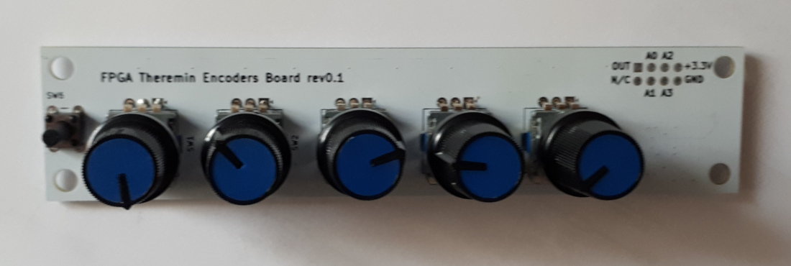
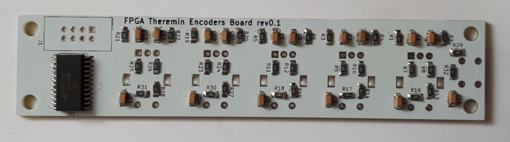
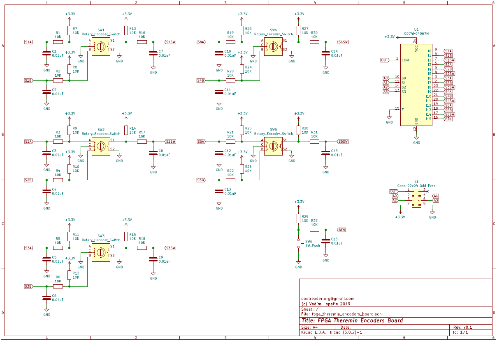
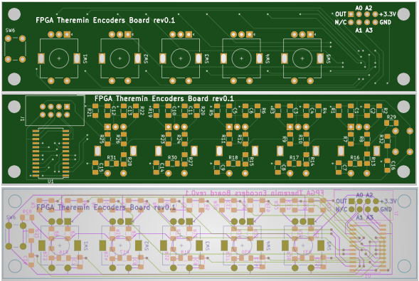

This page describes design of control board - with 5 encoders and one button
Schematic and PCB is designed in KiCAD based on LTSpice simulation results.
| Board | KiCAD Schematic | Gerber file |
|---|---|---|
| Encoders Board   |
 |  |
Mux is used to minimize number of pins needed. Without mux, 3*5+1 = 16 pins would be used.
With mux, board is connected to FPGA using 5 pins: 4 output pins for MUX address, 1 input pin for reading addressed button/encoder pin state.
Encodes module interface:
Input address is changed at 100MHz/32 == 3MHz frequency. All pins are checked in one 100MHz/32/16 = 200KHz clock cycle. Debouncer uses 12 bit counter - only if input has the same value for 4096 cycles, it can switch its state. So, minimal time for switching is 1/50 of second. Output of debouncer is 16bit of button/encoder pin states, 16 bit change flags (1 for corresponding bit if it's changed since last cycle) and UPDATE signal, which is set to 1 for one 100MHz clock cycle once per 10ms.
To minimize CPU (PS) part of driver, some useful logic has been implemented inside FPGA.
For each button, encoders module provides 8 bits: one flag (current button state) and 7 bit counter - number of 0.1s intervals since last change (can measure up to 12 seconds, stays at 127 if interval exceeds number of bits available for counter).
For each encoder, there are two 4 bit counters - one for pressed encoder button state, one for normal state. If encoder shaft is being rotated, corresponding counter is being increased or decreased depending on rotation direction. So, UI will be able to detect all changed even if checks board state 2-3 times per second - up to 7 rotation ticks will be remembered in counters. If more than 7-8 ticks are made since last check, there will be overflow: e.g. 10 rotation ticks CW give the same value as 6 ticks CCW.
This design utilizes 184 LUTs (1.05%), 12 of which are used as register bank (distributed RAM 12x16).
Source code is available on GitHub
todo